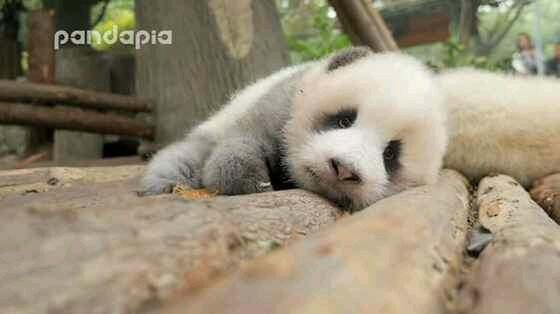
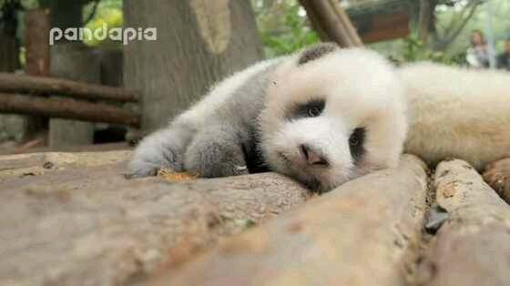

| Name | School | Age | Favorite hobby | Favorite colors | Favorite Animal |
| Sienna | KSAT at Kruger middle school | 11 | Robotics | Green / Blue /Yellow | Albino Alligator |
| Meerub | STEM Academy at Nimitz middle school | 11 | Robotics | Black / Blue / Purple | Albino Panda |
 

| This is a Birthday card we made on day 1. |
| This is the story we made on the 1 day. |
| This is the educational game we made on Day 3. |
| This is the impossible game that we made on day 3. |